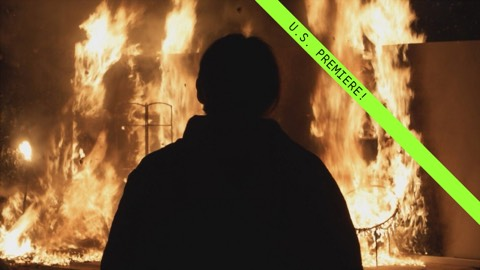

About the film
Filmed over three years, ANGELS ARE MADE OF LIGHT follows students and teachers at a school in an old neighborhood of Kabul that is slowly rebuilding from past conflicts. Interweaving the modern history of Afghanistan with present-day portraits, the film offers an intimate and nuanced vision of a society living in the shadow of war.
At the festival
- 2018 Sunday, October 14, 2018 · 4:30 PM · Naval Heritage CenterPost-screening discussion with director James Longley.
Sessions about this film
- 2018 · Fri Oct 12 · 4:15 PMConversationClosing Conversation: Journeys Across the Abyss in Print and ScreenJames Longley, Shannon Service, Janet Reitman
- 2018 · Fri Oct 12 · 4:15pmPanel · DX²Journeys Across the AbyssShannon Service, Janet Reitman, James Longley
More films on these topics
- Of Fathers and SonsTalal Derki2018 · 99 min

Killing AnnaSam Benstead2026 · 76 min Rehearsals for a RevolutionPegah Ahangarani2026 · 95 min
Rehearsals for a RevolutionPegah Ahangarani2026 · 95 min- Short Strand: Minneapolis: On the Record + A Special ScreeningLaura Poitras, Rachel Lauren Mueller · Anne Sundberg · Yoruba Richen, Christalyn Hampton2026
 The Secret Reading Club of KabulShakiba Adil, Elina Hirvonen2026 · 95 min
The Secret Reading Club of KabulShakiba Adil, Elina Hirvonen2026 · 95 min- One BulletCarol Dysinger2023 · 90 min